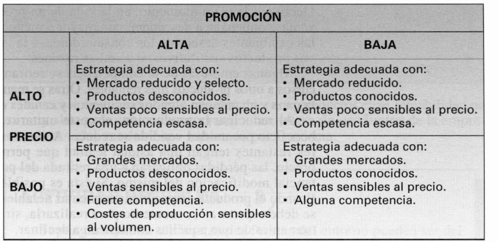
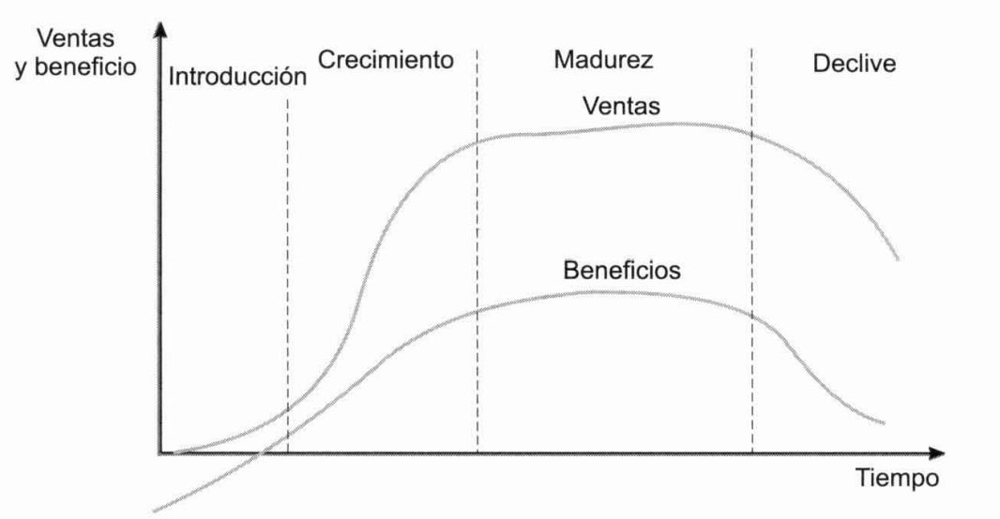
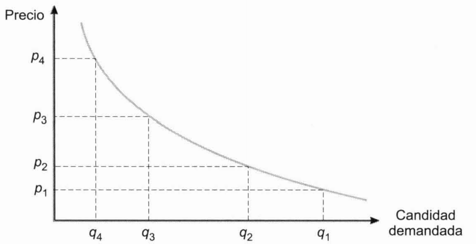
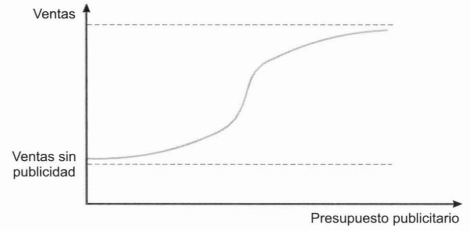

Tema 14: Las variables del marketing
El producto. Concepto, la diferenciación y el posicionamiento de marcas
Producto. existen diferentes concepciones para este término:
-
Producto tangible. Bien o servicio con cierta entidad física.
-
Producto ampliado. Cuando alguien adquiere un producto también compra un conjunto de servicios que acompañan a tal ente físico.
-
Producto genérico. El consumidor realmente compra la esperanza de obtener un beneficio; satisfacer una necesidad o un deseo. Esta concepción es la que debe imperar desde el punto de vista del marketing.
Producto diferenciado. Aquel que se distingue del resto según la percepción del consumidor.
Diferenciación de productos. Consiste en crear nuevos productos con los que, por ejemplo, acceder a nuevos segmentos del mercado, modificando los existentes de manera que cambie la percepción que el consumidor tiene de los mismos y las necesidades que éste puede considerar satisfechas.
Posición de la marca. situación que ocupa en relación a las demás marcas según los atributos que los consumidores perciben en ellas. Para determinar la posición de cada marca se puede solicitar a los consumidores que las clasifiquen según el grado en que consideren que cada una de ellas posee los atributos de posicionamiento que previamente se han definido como determinantes.
El estudio de las posiciones de las marcas puede ayudar a definir el segmento del mercado al que dirigirse. Para ello, se determinan las posiciones consideradas como ideales por los consumidores de cada segmento y aquellas en las que sitúan a las diferentes marcas, sean de la empresa o de la competencia. De este tipo de estudio puede inferirse también la conveniencia de crear nuevos productos o modificar o diferenciar los actuales.
Las principales dificultades para la introducción de un nuevo producto en un mercado derivan de la diferenciación realizada de los productos ya existentes, gracias a la cual, en muchos casos, los deseos de los distintos segmentos se encuentran ya cubiertos.
El ciclo de vida del producto
El ciclo de vida de un producto está formado por las siguientes etapas.
- Introducción o lanzamiento. Cuando el producto es nuevo en el mercado tiene la ventaja de que existen pocos competidores, y el inconveniente de que la mayoría de los consumidores no han probado el producto y, en consecuencia, saben poco de él, por lo que el crecimiento de las ventas es lento.
Se requiere un esfuerzo importante de promoción, la distribución suele ser reducida y los costes de producción elevados al no poderse aprovechar las ventajas de la producción en gran escala.
- Crecimiento. A medida que el producto va siendo más conocido, si satisface al mercado, las ventas comienzan a crecer sustancialmente, lo que atrae a la competencia. La empresa comienza a diferencia el producto para introducirse en nuevos segmentos, lo que requerirá una diferenciación en las políticas de marketing-mix.
La distribución se amplía a nuevos canales y los gastos en promoción y publicidad siguen siendo elevados, pero más reducidos que en la etapa anterior.
Al aumentar la producción, los costes unitarios se reducen y es posible reducir un poco los precios.
El crecimiento de los beneficios depende de la estrategia de la empresa: puede elegir entre políticas que abarcan desde la fuerte promoción y el bajo precio a la escasa promoción con precios más elevados.
La celeridad con que se producen estas dos primeras etapas depende, en buena medida, de la rapidez de la aceptación del producto por los consumidores. La distribución de las personas en categorías de predisposición a la prueba es aproximadamente normal.
{width="4.861942257217848in" height="2.3655074365704287in"}
Figura . Estrategias en la promoción
- Madurez. Llega en el momento en que se reduce el crecimiento de las ventas y éstas se estabilizan. También los costes y, como consecuencia, los beneficios tienden a estabilizarse. La demanda y los beneficios generados depende del crecimiento de la población y de la coyuntura económica más que de las acciones de la empresa.
Dado que el producto ya es conocido, la mayoría de los consumidores tienden a un comportamiento repetitivo, y solo las empresas competidoras más fuertes habrán conseguido mantenerse en el mercado.
Para prolongar esta fase, ha de procurarse el acceso a nuevos segmentos del mercado, diferenciando el producto y buscándole nuevos usos, aumentando, con ello, el número de consumidores.
Para hacer frente a la competencia en cada segmento, la empresa puede desarrollar estrategias de marcas múltiples que compitan entre sí y con las de las empresas competidoras.
- Declive. Las ventas comienzan a descender, con mayor o menor celeridad, debido a los cambiantes deseos de los consumidores, a la introducción de nuevos productos sustitutivos, o ambas razones.
Al reducirse la producción, el coste unitario se incrementa y el beneficio por unidad vendida se reduce. A menos que los consumidores restantes tengan una asidua lealtad que permita incrementar el precio, las pérdidas obligarán a una retirada del producto o a una sustancial modificación del mismo. Si esta es posible, no se debe esperar a ese momento para realizarla, sino que se debe efectuar antes de que las ventas comiencen a declinar.
Tampoco para la retirada del producto se debe esperar a incurrir en pérdidas sino que debe realizarse en el momento en que se haya desarrollado un nuevo producto más rentable en el que emplearlos.
{width="5.552123797025372in" height="2.885437445319335in"}
Figura . Ciclo de vida de un producto
La creación de nuevos productos
La creación de un nuevo producto supone la realización de una inversión que puede ser analizada como tal. La rentabilidad esperada ha de ser mayor que el coste de su financiación y, entre los nuevos productos alternativos que cumplan tal condición, ha de darse preferencia, en principio, a aquellos que tengan mayores rentabilidades internas o valores actuales netos.
En ocasiones, sin embargo, pueden interesar productos cuya rentabilidad no es muy alta pero que, al incorporarse a la cartera de productos, reducen el nivel de riesgo soportado por la misma.
Estrategia de desarrollo: el nuevo producto se dirige al mismo mercado en el que viene actuando la empresa.
Estrategia de diversificación de productos y mercados: el nuevo producto se dirige a nuevos mercados. Diversificando entre productos que reaccionan de forma distinta a las diversas circunstancias económicas es posible reducir el riesgo de la actividad empresarial y procurar una evolución estable.
Línea: conjunto de productos agrupados por ciertas características que pueden ser de tipo técnico o comercial. Su profundidad es el número de productos o referencias que la integran.
Grama de productos: está formada por el conjunto de líneas y su amplitud es el número de líneas que la forman.
Longitud: número total de productos o ítems de la empresa.
La planificación y desarrollo del producto consta de las siguientes etapas:
-
Búsqueda de ideas. Pueden provenir del interior de la empresa o del exterior. En ocasiones se crean grupos de creatividad para la generación de ideas. En el método del brainstorming un número de personas comprendido entre cinco y diez se reúnen para decir unas cuantas ideas les vengan a la mente, evitando la crítica a las restantes y tratando de asociar sus ideas y las de los demás para, posteriormente, realizar una evaluación de todas ellas.
-
Selección de ideas. Hay ideas que pueden ser rechazadas por ser irrealizables o carentes de valor. Las restantes han de ser sometidas a un somero análisis para determinar si pueden ser realizadas con los medios de la empresa y para estudiar su viabilidad en el mercado. Este análisis general suele ser realizado por un grupo de representantes de las distintas funciones de la empresa. Las ideas que superan este análisis han de ser evaluadas para su posterior selección.
-
Análisis de viabilidad. Las ideas han de pasar por un proceso de selección y evaluación económica, tanto más exacto a medida que se va afirmando el proyecto. Para obtener información sobre cómo percibirán los consumidores el producto se realiza el denominado test de concepto, que consiste en encuestar a varios grupos de personas a las que previamente se les informa sobre el producto todavía no desarrollado. De este modo se investigan las necesidades que el consumidor entiende que el producto satisface, la situación en que lo posiciona en relación a otros productos, el precio que pagaría por él, etc. Se puede llegar a estimar el porcentaje de personas que podrían aceptar el producto y, si tal porcentaje se estima suficiente, puede continuarse con el proyecto.
-
Desarrollo del producto. Los conceptos que son aceptados por el consumidor y que, además, son susceptibles de elaboración con los medios de la empresa, y realizables con criterios económico-financieros, se materializan en prototipos que son sometidos a nuevos análisis técnicos, comerciales y financieros. Se especifican y seleccionan los métodos de producción, los costes de fabricación, el color del producto, etc.
-
Prueba del producto. Los prototipos alternativos resultantes son sometidos al juicio de los consumidores, a algunos de los cuales se les realizan tests de percepción, de aceptación y de utilización.
Para analizar el comportamiento del consumidor en el acto de compra real, se puede poner a la venta, con características diferenciadas en diversos establecimientos semejantes, lo que puede ayudar a seleccionar los atributos que el consumidor prefiere.
En ocasiones se ensayan prototipos y alternativas mercadotécnicas en diversos mercados-prueba o mercados-testigo. El resultado de estas pruebas puede conducir a una reformulación técnica y comercial del producto y a nuevas pruebas.
- Comercialización. Si los resultados de las pruebas son favorables, el producto es comercializado y comienza la fase de introducción de su ciclo de vida.
Para la planificación y control del desarrollo del producto son útiles las técnicas PERT. Para la selección de ideas y de decisiones alternativas tienen utilidad los árboles de decisión. En la evaluación del producto son útiles el análisis del punto muerto, el valor actual neto y el tipo de rendimiento interno.
La identificación del producto. Marcas, envases y etiquetas
Marca: identifica y permite el reconocimiento de un producto por una palabra, un nombre, un símbolo, un diseño o una combinación de tales signos.
Nombre de marca: parte de la marca que puede pronunciarse.
Distintivo de marca: parte de la marca que puede recordarse, pero no pronunciarse (símbolo, diseño, color, etc.).
Marca registrada: parte de la marca (nombre, símbolo, diseño, etc.) legalmente protegida para poder ser usada con exclusividad.
Marcar los productos tiene ventajas para la empresa y para los consumidores:
-
A la empresa le permite identificar sus productos, protegerse contra las imitaciones, referir sus acciones mercadotécnicas a unos signos que el consumidor puede identificar, obtener lealtad a la marca de los consumidores satisfechos, diferenciar y modificar sus productos.
-
El marcado de los productos simplifica las decisiones de compra de los consumidores. Si estos quedan satisfechos con una compra, pueden adoptar un comportamiento repetitivo.
Marca familia: marca común a varios productos de la misma empresa.
Marca individual: mara utilizada por un solo producto.
El marcar individualmente un producto nuevo permite desvincular la reputación de otros productos a la aceptación de aquel.
Sin embargo, si se tiene gran confianza en el producto de reciente creación y los anteriores cuentan con un gran prestigio, las ventajas de ponerle la misma marca son evidentes. A esta estrategia se le denomina extensión de la marca y con ella se trata de extender el prestigio de los anteriores productos a los nuevos o modificados. Permite, además, realizar promoción y publicidad comunes.
Marcas nacionales o de fabricante: son puestas por la empresa fabricante y generalmente su promoción se realiza a nivel nacional o internacional.
Marcas de distribuidor: marca impuesta por el distribuidor. En ocasiones el fabricante ha de elaborar el producto ajustándose a los requisitos impuestos por el distribuidor e identificarle con la marca de este último.
Son cualidades deseables en una marca:
-
Que sea fácil de recordar, identificar y pronunciar, por lo que generalmente es preferible que el nombre sea corto.
-
Que sugiera algo sobre los atributos del producto y sobre los beneficios que el consumidor obtendrá de él.
Para seleccionar la marca se realizan pruebas de asociación, sobre la imagen que sugiere cada una de las alternativas, de facilidad de pronunciación, de memorización y de preferencia entre ellas.
Envase: desde el punto de vista mercadotécnico es una parte del producto. Tiene gran importancia pues la mayor parte de las decisiones se toman en el lugar de adquisición y con los distintos productos alternativos a la vista. El envase debe atraer la atención y, al igual que la marca, ha de sugerir algo sobre los atributos del producto y sobre los beneficios que el consumidor obtendrá de él. Debe inspirar confianza y producir una impresión favorable, apoyando y confirmando el prestigio que la empresa trata de asociar a la marca.
La creación del envase, pasa por una serie de fases semejantes a las de la creación del producto mismo.
Si la empresa desea diferenciar sus productos puede diseñar envases distintos para cada uno de ellos. En otras ocasiones pude interesar que el consumidor asocie entre sí diversos productos de una línea, lo que se facilita dotándoles de envases idénticos o semejantes.
Los objetivos del envase son contener, proteger, promocionar y diferenciar el producto.
Etiqueta: elemento identificador del producto. Se diferencia entre:
-
Etiqueta de la marca: puede ser un instrumento importante de promoción e identificación del producto, especialmente, cuando no se utiliza envase. En tal caso, la etiqueta cumple algunas de las funciones de éste y puede determinar preferencias muy acusadas entre los consumidores.
-
Etiqueta informativa: proporciona datos sobre el fabricante o vendedor y las características y forma de uso o consumo del producto. En algunos productos su contenido se encuentra regulado.
La decisión de determinación de precios y sus limitaciones
La decisión de fijación de los precios de los productos, parte de cierta información que actúan como limitación de la decisión. Ésta está formada por datos provenientes de la empresa y por otros referentes a su entorno:
-
Datos internos: costes empresariales, interrelaciones entre la política de precios y las restantes políticas de marketing-mix.
-
Datos externos: limitaciones legales, comportamiento previsible de la demanda y de los consumidores ante las variaciones de los precios y la actuación de la competencia.
Costes y precios
Para que la empresa obtenga beneficios y sobreviva a largo plazo, el conjunto de sus productos ha de generar los ingresos suficientes para cubrir sus costes. Ello implica que, por regla general:
-
El precio de venta ha de ser superior al coste total unitario (precio técnico).
-
El margen bruto unitario ha de ser positivo, es decir, el precio ha de ser superior al coste variable unitario (precio mínimo).
En ocasiones, la empresa tiene un exceso de capacidad y puede crear nuevos productos sin incrementar por ello sus cargas de estructura. En tal caso, podría ser suficiente que el precio unitario del nuevo producto cubriera los costes variables unitario que le son imputables.
Muchas empresas fija sus precios aplicando cierto tanto de rentabilidad sobre coste variable. Si dicho tanto o margen proporcional es del \(s\) por uno, el precio de venta será:
Para no incurrir en pérdidas, el valor de \(s\) ha de ser tal que permita recuperar los costes fijos, es decir:
Limitaciones legales y gubernamentales
Existen diversas normas de rango legal y administrativo, como las de defensa de la competencia, las de intervención de precios o las de imposición indirecta, que limitan o influyen en los precios finales de venta al consumidor.
La demanda y el comportamiento al consumidor ante las variaciones de precio
Curva de demanda: curva que relaciona la cantidad demandada con el precio del producto. Puede ser diferente para la clase de producto y para cada marca.
{width="3.8190857392825897in" height="1.9547156605424323in"}
Figura . Curva de demanda
Bienes Giffen: el volumen de compras se reduce al disminuir el precio. Suelen ser artículos que satisfacen necesidades primarias. Los consumidores pueden no ser muy aficionados a ellos, pero, dado su nivel de renta, se ven obligados a su consumo. Cuando su precio desciende, el consumidor descubre que su renta real ha aumentado y los adquiere en menor cuantía, comprando otros bienes con el remanente de su renta.
La estimación de la curva de demanda puede basarse en:
-
La subjetividad del empresario.
-
Datos históricos.
-
Datos conseguidos mediante sondeos realizados a consumidores.
-
Experimentación analizando la respuesta de los consumidores para diferentes niveles de precios en diversos establecimientos o mercados.
La curva de demanda de un mismo producto puede tener formas diferentes en cada uno de los segmentos del mercado a que se dirige, en función de las características de los consumidores que los integran, de lo que puede derivarse la conveniencia de diferenciar tal producto en base a su precio.
La elasticidad de la demanda respecto al precio responde a la siguiente expresión:
La elasticidad de la curva puede ser diferente en cada uno de sus puntos y, por tanto, toda medida de elasticidad debe referirse a un punto en concreto.
Las oscilaciones de precios y cantidades abarcan tramos por lo que para calcularla se suele tomar como precios y cantidades de partida las medias aritméticas de los extremos:
Cuando se conoce la ecuación de la curva de demanda es posible determinar su elasticidad en un punto de la misma:
En las zonas de la curva en las que la elasticidad es superior a la unidad, se dice que la demanda es elástica. Reduciendo el precio se produciría un incremento en la cantidad demandada en proporción superior al descenso del precio, por lo que los ingresos se incrementarían.
Si la elasticidad es inferior a uno, la demanda es inelástica, una reducción del precio originaría un aumento de la demanda de menor proporción, con lo que los ingresos se reducirían. Convendría aumentar el precio.
Se dice que la elasticidad es normal cuando es igual a uno, en cuyo caso las modificaciones de precios producen variaciones proporcionalmente iguales en la demanda. Es la elasticidad para la cual el ingreso es máximo.
El precio es una variable que el consumidor tiene en cuenta en las decisiones de compra de bienes de adquisición frecuente y en los que, siendo de adquisición esporádica, tienen un alto coste en relación a la renta personal, concediéndole menos importancia en la compra de bienes de adquisición distanciada en el tiempo y cuyo importe no es elevado.
Ciertos productos se encuentran sometidos a la percepción que tiene el consumidor de la relación calidad-precio:
-
Precios mínimos: los consumidores los asocian a una baja calidad y no los adquieren.
-
Precios máximos: por encima de los cuales no se compran por ser considerados excesivamente caros.
-
Precio óptimo: el producto es aceptado por el mayor número de consumidores.
Competencia y precios
La previsible reacción de las otras empresas que concurren en el mercado es un factor de gran importancia en la decisión de fijación de precios. Las empresas tratan de evitar una guerra de precios que afecte a los resultados económicos de todas ellas. Para competir suelen centrarse en otras variables como la promoción.
En un mercado en el que compiten muchas marcas, aquella cuyo precio se eleve perderá muchas ventas.
En una situación de competencia perfecta, la demanda de cada marca sería infinitamente elástica.
Objetivos en la política de precios
Los objetivos perseguidos en la fijación de precios hacen referencia a:
-
El beneficio o la rentabilidad. La rentabilidad es un objetivo preferible al beneficio.
-
Las ventas o la cuota de mercado.
-
Para maximizar las ventas se fija un mínimo aceptable de beneficio y se trata de maximizar el volumen de ventas.
-
Con el aumento de la cuota de mercado se trata de desplazar a la competencia, incrementando la participación de la empresa en el mercado.
-
-
El mantenimiento de cierta situación en relación a la competencia.
-
Consideraciones éticas y sociales.
-
Cuestiones vinculadas a la imagen de la empresa y de sus productos.
Seguimiento al líder: se produce cuando, para evitar la guerra de precios, diversas empresas seguidoras adoptan como indicador el precio fijado por la empresa líder, modificando sus precios en el momento en el que ésta lo hace y en la misma proporción. La competencia se centra en cuestiones al margen de la política de precios.
En algunos casos, como los precios de muchos servicios públicos, predominan consideraciones de índole ética y social y los precios se fijan con relación a las posibilidades de pago de los consumidores.
La estrategia de precios de la empresa puede ser una parte integrante de la estrategia de imagen.
Algunas estrategias de precios
Entre las estrategias de precios que pueden seguirse, se utilizan con frecuencia:
-
Precios promocionales: pueden utilizarse para introducir un producto nuevo al mercado, revitalizar un producto antiguo o introducirlo en un nuevo segmento.
-
Líneas de precios: se fija un cierto número limitado de precios con objeto de simplificar la decisión del consumidor y crear una imagen concreta fácilmente perceptible.
-
Precios psicológicos: los precios se fijan atendiendo a la reacción psicológica del consumidor.
-
Precios flexibles: varían de mercado a mercado e incluso de consumidor a consumidor. Es una estrategia frecuente en mercados industriales grandes, en los que los clientes que cuentan con cierta antigüedad, o cuyos volúmenes de compras son elevados, reciben de los fabricantes e intermediarios mejores precios que los demás.
-
Descuentos: se aplican sobre los precios reseñados en catálogos (precios de lista). Pueden ser por pronto pago, por volumen de compras, de temporada o funcionales. Estos últimos son los que se aplica a intermediarios que realizan algunas funciones como la clasificación de los productos, su envasado, etc.
-
Referencia geográfica de precios: el precio final percibido por el proveedor y el abonado por el cliente resultan afectados por las cláusulas de referencia geográfica de los precios. En la cláusula FOB (Free On Board) el vendedor dejará la mercancía a bordo del medio de transporte, siendo de cuenta del comprador el gasto de transporte desde ese momento, así como el riesgo de que la mercancía resulte dañada con posterioridad.
Diferenciación y discriminación de precios
Diferenciación y discriminación de precios: prácticas consistentes en aplicar diferentes precios a distintos clientes o marcas, o en diversos lugares o momentos del tiempo.
El beneficio de una empresa que vende su producto en \(N\) mercados con precios diferenciados será:
Derivando el beneficio respecto a cada uno de los \(q_{i}\), e igualando a cero el resultado, se obtienen las condiciones de máximo beneficio:
Donde \(c'\) es el denominado coste marginal, o modificación que experimenta el coste al modificarse en una unidad física la cantidad de producto producida y vendida:
De la expresión del ingreso total del mercado \(i\)
Se deduce la del ingreso marginal de ese mercado:
Para que el beneficio sea máximo, los ingresos marginales de los diferentes mercados han de ser iguales entre sí e iguales, además, el coste marginal:
Recordando la ecuación de la elasticidad-precio de la demanda:
Por consiguiente, para obtener el máximo beneficio ha de cumplirse:
Para que el importe \(I_{i}'\) sea idéntico en todos los mercados, se habrá de fijar un precio más elevado en aquellos cuya elasticidad sea más pequeña.
La publicidad
Publicidad: forma de comunicación en masa que tiene como objetivo transmitir información, crear una actitud o inducir a una acción beneficiosa para quien la realiza. Se distingue:
-
Publicidad difusa: pretende solamente dar a conocer algo.
-
Publicidad persuasiva o combativa: trata de incidir en el reparto del mercado entre distintos productos.
-
Publicidad mixta: combina objetivos de difusión y de persuasión. Es lo habitual.
Las principales cuestiones que se plantean en materia de publicidad son:
-
Presupuesto publicitario.
-
Determinación del mensaje publicitario.
-
Selección de medios y soportes publicitarios.
-
Medición y control de los efectos de la publicidad.
El presupuesto publicitario
La mayoría de las empresas determinan sus presupuestos publicitarios atendiendo a alguna de las siguientes reglas generales:
-
Gastar el montante que resta del beneficio una vez atendida la rentabilidad normal del capital.
-
Gastar un porcentaje fijo de las ventas en unidades monetarias.
-
Asignar un presupuesto variable en función de los gastos que realice la competencia, no gastando menos que la media, ni mucho más, lo que podría dar lugar a una guerra publicitaria.
-
Presupuestar tras analizar los objetivos y los costes para alcanzarlos.
Los dos primeros procedimientos conducen a la realización de mayores esfuerzos publicitarios cuando menos necesarios son (ventas y beneficios elevados). En lugar de amortiguar las oscilaciones económicas coyunturales, las acentúan.
El tercer procedimiento no siempre se justifica pues, en ciertos momentos, pueden requerirse esfuerzos publicitarios muy superiores a la media del sector.
El mejor procedimiento es el último. Se trata de determinar el volumen de gastos que optimiza el objetivo. El problema es que generalmente no se conoce la relación funcional existente entre las ventas y el esfuerzo publicitario y sin cierto grado de conocimiento de la relación no es posible llegar a una optimización de la decisión ni de forma aproximada.
En la determinación de la función que relaciona ventas y gastos publicitarios, la principal dificultad se encuentra en aislar el efecto de éstos sobre aquéllas, pues el volumen de ventas depende también de otras variables de control de la empresa y de circunstancias que la empresa no puede controlar. Otra dificultad es que suele existir cierto retraso en el efecto de la publicidad sobre las ventas.
Generalmente se considera que la curva correspondiente a la función adopta una forma semejante a la siguiente figura, es decir, inicialmente las ventas se incrementan más que proporcionalmente con los aumentos de los presupuestos de publicidad, hasta cierto nivel a partir del cual lo hacen menos que proporcionalmente. Existe un nivel de ventas mínimo que no requiere publicidad y otro máximo que se alcanza a medida que el mercado se va saturando.
{width="3.5916437007874014in" height="1.7647255030621172in"}
Figura . Relación entre las ventas y el presupuesto publicitario
El mensaje publicitario. El anuncio
Son requisitos del texto publicitario:
-
Que señale algún atributo del producto que sea deseable.
-
Que lo señale con carácter exclusivo.
-
Que resulte creíble.
Además, debe evitarse la evocación de los aspectos no deseables en el producto.
El anuncio será diferente si se requiere una acción directa de fuerte impacto o una acción diluida a largo plazo, pero siempre debe:
-
Atraer la atención y mantener el interés durante el tiempo suficiente para estimular la atracción por el producto.
-
Poner de manifiesto la acción que ha de emprender el consumidor, ya sea un cambio inmediato o lento, o un mantenimiento de su comportamiento.
El anuncio está formado por un texto y una ilustración dispuesta físicamente según cierta composición.
Generalmente, antes del lanzamiento del mensaje se requieren:
-
Estudios de opiniones de individuos o grupos de consumidores.
-
Pruebas de memorización.
-
Análisis de efectividad.
Selección de medios y soportes publicitarios
Soporte: todo elemento que puede ser utilizado para transmitir el mensaje publicitario al consumidor.
Medio: todos los soportes afines o de la misma categoría.
Audiencia de un soporte: es el número de personas de la población-objetivo a las que les llega el mensaje. Es una de las magnitudes de mayor importancia en la selección de medios y soportes.
El proceso de selección comienza con la enumeración de los medios y soportes disponibles. La elección entre ellos depende de los siguientes factores:
-
Objetivos del mensaje.
-
Difusión del medio y el soporte entre el segmento de población al que se desea dirigir la comunicación.
-
Características del producto.
-
Características de la población-objetivo.
-
Posibilidades de anunciar el producto en momentos concretos del tiempo, como los cercanos a la decisión de compra.
-
Precio de los medios y soportes.
-
Servicios complementarios que ofrecen.
Audiencia neta: número de personas de la población objetivo expuestas al menos a uno de los soportes.
Suponiendo que una empresa inserta un anuncio en los soportes \(S_{1},\ S_{2}\) y \(S_{3}\), para dirigirse a una población de \(N\) personas. Denominando:
-
\(n_{i}\) a la audiencia del soporte \(i\).
-
\(n_{\text{ij}}\) al número de personas expuestas a los soportes \(i\) y \(j\) simultáneamente.
-
\(n_{123}\) al número de personas expuestas a los tres soportes de manera simultánea.
La audiencia neta será:
Penetración de un soporte: tanto por uno que, del número de personas a las que se dirige el mensaje, representa el número de las que resultan expuestas al mismo.
La penetración del soporte \(i\) es el cociente:
Las penetraciones conjuntas de los soportes son:
La penetración neta será:
Entre las distintas alternativas existentes de combinación de soportes conviene elegir aquella para la que la audiencia neta y la penetración neta sean más elevadas.
La medida y el control de la eficacia de la publicidad
El control de la publicidad requiere una medida de los resultados de cada campaña.
En los controles a corto plazo suele ser frecuente medir el grado de cumplimiento de los objetivos específicos de la comunicación, es decir, de su incidencia en los consumidores. Para ello, se realizan tests sobre muestras de personas que han estado expuestas al soporte del mensaje:
-
Test de recuerdo o memorización: se pide a los consumidores una descripción del anuncio.
-
Test de reconocimiento: se les preguntan si han visto el anuncio en un determinado medio, o con qué marca asocian un producto, etc.
Otros tests tratan de determinar la modificación de las actitudes de los consumidores analizando sus preferencias antes y después de recibir el mensaje publicitario.
En los controles a largo plazo se utilizan:
-
Modelos econométricos: se separan los efectos de la publicidad de los demás factores y se incorporan los efectos temporales.
-
Experimentación: por ejemplo, la de la ciudad testigo, consistente en elegir dos ciudades tan semejantes entre sí como sea posible en cuanto a los factores que pueden incidir en la evolución de sus ventas, y lanzar una campaña publicitaria en solo una de ellas (ciudad experimento), comparándose luego las ventas de esta con las de la ciudad en la que no se realiza ninguna publicidad (ciudad testigo).
La promoción de ventas y las relaciones públicas
Promoción de ventas: está formada por todas aquellas actividades mercadotécnicas distintas de la venta personal y de la publicidad, que estimulan las compras de los clientes y la eficacia de los vendedores, tales como exposiciones, ferias, demostraciones, material para tiendas y otros esfuerzos de ventas no repetitivos que se encuentran fuera de la rutina habitual.
Las principales diferencias entre la promoción de ventas y la publicidad son:
-
La publicidad se realiza por medios controlados por terceros, en tanto que los instrumentos utilizados en la promoción de ventas son controlados por la propia empresa.
-
Las decisiones de promoción de ventas son esporádicas y menos rutinarias que las de publicidad.
-
La importancia de la promoción de ventas suele ser mayor en las empresas pequeñas que en las grandes.
En muchos casos, la promoción de ventas actúa como puente entre la publicidad y la venta personal completando y coordinando los esfuerzos realizados en estos dos campos.
La promoción puede tener como objetivo al que dirigirse:
-
Consumidor final.
-
Distribuidores.
-
Prescriptores, son personas cuya opinión e influencia determina o condiciona en buena parte la selección del consumidor.
Promoción dirigida al consumidor final: puede tratar de informarle o de estimularle:
-
Instrumentos de información: entrega de manuales y folletos administrativos, realización de demostraciones y disposición de servicios de resolución gratuita de consultas sin compromiso.
-
Instrumentos de estímulo al consumidor: distribución de muestras gratuitas y la realización de concursos y ofertas de premios.
Promoción en el lugar de compra: tiene especial importancia en los productos cuya adquisición se hace por impulso.
Promoción dirigida a los distribuidores: puede ser, también, de información y prestación de servicios, o de estímulo e incentivación inmediata:
-
Instrumentos de información: asistencia en la formación de sus vendedores, asesoría contable y en la organización y control de sus almacenes, en la disposición de sus expositores, etc.
-
Instrumentos de estímulo: descuentos por volumen de compras, concursos de ventas entre distribuidores, ofertas especiales, etc.
Los vendedores, agentes y representantes de la empresa tienen un papel importante en la promoción ayudando a los consumidores y distribuidores con su asesoramiento y actuando como agentes de comunicación de la empresa. También pueden ser objeto de instrumentos de promoción con los que se trata de informarles, estimularles y aumentar su eficacia mediante competiciones de ventas, primas por volumen de ventas, distinciones honoríficas, etc.
La actividad de los agentes y representantes de la empresa con los prescriptores es una de las labores promocionales más importantes realizadas con este colectivo.
Merchandising: comprende el conjunto de decisiones y actividades relativas a la exposición de los productos en el lugar de venta, el espacio dedicado a cada uno de ellos, su presentación y, en general, la disposición de los artículos en la tienda o almacén de venta. Los principales servicios en los que se basa son:
-
Aquello que se ve se vende; lo que se coge se compra. Los mejores lugares son los de paso obligado y los de paso repetido. Las mejores zonas de los estantes son las que se encuentran a la altura de los ojos y al alcance de las manos.
-
El volumen de ventas es tanto mayor cuanto más elevado sea el volumen expuesto, pues estimula la compra en mayores cantidades.
-
La imagen de un producto depende de la de los que le rodean.
-
Para facilitar la decisión de compra, los productos han de situarse en grupos de categorías homogéneas. Los artículos que son complementarios entre sí deben colocarse juntos.
-
La situación de los artículos junto a otros de compra repetida o que son objeto de fuerte promoción incentiva su compra, pues el lugar en que se sitúan estos últimos se transforma en zona de paso casi obligado.
En el merchandising, la disposición de los productos en la tienda se completa con la señalización exterior, los rótulos de la fachada y los escaparates. En el interior, el ambiente creado con la iluminación, el mobiliario, los colores y la música influyen en la actitud del consumidor y en su comportamiento de compra.
Relaciones públicas: comprenden todas las actividades y decisiones destinadas a mejorar y mantener las relaciones de la organización empresarial con conjuntos de personas tales como sus empleados, los consumidores, los accionistas, los medios de comunicación, las autoridades locales o los sindicatos.
Las principales diferencias entre la publicidad y las relaciones públicas son:
-
Las comunicaciones de las relaciones públicas se dirigen a mayor variedad de receptores.
-
Las actividades de relaciones públicas se basan en un esfuerzo continuado de mantenimiento de una política estable, a largo plazo, par la consolidación de una opinión pública favorable y para la obtención de la confianza de los grupos a los que se dirige.
-
Aunque las actividades de las relaciones públicas tienen un coste, no se suele pagar por los mensajes que genera. Se trata más bien de crear noticias favorables a la empresa que los medios de difusión recogen como tales acontecimientos y no como anuncios pagados.
-
El mensaje es más sutil y no tan evidente o directo como el de la publicidad.
-
La comunicación de las noticias no es tan repetitiva como suele serlo en la publicidad.
-
El mensaje es más creíble en las relaciones públicas que en la publicidad.
El conjunto de medios existentes para mantener unas buenas relaciones públicas es inagotable. Se trata de un obrar bien y hacerlo saber que requiere:
-
Determinar lo que los grupos sociales desean y los intereses puestos en juego.
-
Orientar las decisiones y la acción a la satisfacción de tales deseos e intereses.
-
Exponer y demostrar lo que se ha realizado en tal sentido.
Pseudoacontecimiento: hecho elaborado dispuesto para su difusión por los medios de comunicación.
Los pseudoacontecimientos tiene, sobre los hechos no elaborados, las siguientes ventajas:
-
Pueden ser planificados y preparados minuciosamente.
-
Son más independientes del momento y del lugar en que se producen.
-
Pueden ser ampliados antes, por la previsión de su futuro acaecimiento, y después, por los comentario sobre lo ocurrido.
-
Se pueden disponer los instrumentos y autores más adecuados al efecto deseado.
No se debe confundir un pseudoacontecimiento con una falsificación.
La apreciación de su efectividad se suele realizar de forma intuitiva, si bien en algunas ocasiones se pueden obtener indicios de su valor, como en la realización de sondeos de opinión o en la respuesta obtenida al solicitar mayor capital a los accionistas, un esfuerzo temporal a los empleados o una información a los poderes públicos.
La venta personal
Venta personal: venta realizada mediante contacto personal entre el vendedor, agente o representante de la empresa y el comprador. Es, por consiguiente, una forma de distribución, pero también un instrumento de promoción de gran importancia.
El vendedor debe conocer bien el producto para informar a los posibles compradores. Además, puede comunicar en sentido inverso, informando a la empresa sobre la evolución del mercado, las necesidades, gustos y deseos de los clientes, las acciones de la competencia y de los intermediarios, etc.
Publicidad y venta personal
Los principales efectos de la publicidad en relación a las tarea de la fuerza de ventas son las siguientes:
-
Refuerza los argumentos del vendedor.
-
Realiza la tarea previa de venta, pues el cliente que ha recibido mensajes publicitarios necesita menos información que el que no tiene noticia previa alguna.
-
Permite el acceso a grupos de convivencia y referencia y prescriptores que pueden condicionar la decisión del cliente potencial y a los que el vendedor no tiene acceso para comunicarse.
-
Permite que el proceso de comunicación continúe entre visita y visita del vendedor, facilitando la venta.
-
Proporciona argumentos y estimula a los vendedores.
Retribución de la fuerza de ventas
El esfuerzo comercial realizado en esta variable se mide por el presupuesto asignado a la misma y este depende de la retribución de los vendedores, de sus gastos de dietas y del número de vendedores o tamaño de la fuerza de ventas.
Sistema de sueldo fijo: cada vendedor percibe una remuneración que es independiente del número de unidades vendidas y que suele depender de su antigüedad y experiencia.
-
Al no ser estimulante, precisa un control riguroso de la fuerza de ventas.
-
Puede ser adecuado cuando es difícil precisar si realmente las diferencias en las ventas de los diversos vendedores se deben a su esfuerzo y capacidad o a otras circunstancias.
Sistema de comisiones: cada vendedor percibe periódicamente un montante igual a cierta proporción de una cantidad que puede ser su volumen de ventas en el periodo, o el importe en el que estas excedan cierta cuantía, o el margen bruto correspondiente a aquél o a éste.
-
La proporción del sistema de comisiones puede ser idéntica para todos los productos o diferente.
-
Es un sistema que estimula las ventas a coto plazo, aunque a largo plazo puede tener efectos negativos pues el personal de venta puede descuidar otras funciones que le son propias.
-
Tiene la ventaja de la sencillez tanto en el cálculo de la retribución de los vendedores como en la determinación del presupuesto.
-
La irregularidad de los salarios de los vendedores en cada periodo y la falta de atención a otros aspectos pueden provocar conflictos y redundar en una falta de identificación del vendedor con la firma.
Sistemas mixtos: la remuneración comprende un sueldo fijo suficiente para que los vendedores tengan cierta estabilidad en sus rentas, y un incentivo que puede ser una comisión establecida sobre ciertas magnitudes o una prima determinada subjetivamente o como proporción sobre otras magnitudes como el número de clientes obtenidos o el número de personas visitadas en el periodo.
La principal desventaja de un sistema mixto es la dificultad de calcular las remuneraciones y elaborar los presupuestos.
La decisión más relevante es establecer la relación media entre el sueldo fijo y el incentivo, pues de ello depende la proximidad a las ventajas e inconvenientes de los otros dos sistemas. Se estima que el sueldo fijo representa el \(75\%\) de la remuneración total y el \(25\%\) al incentivo.
Sistema OPR: procedimiento de fijación de primas efectivas que permite retribuir el esfuerzo realizado por cada vendedor, teniendo en cuenta que el potencial de ventas no es el mismo en todos los territorios, y que, además, proporciona información a la empresa sobre su mercado potencial. Los datos primarios de este sistema son:
-
Objetivo de volumen de ventas que tiene el vendedor, \(O\).
-
Previsión de ventas que éste realiza, \(P\).
-
Resultado alcanzado por el mismo, \(R\).
Una vez determinado el importe sobre el que se calcula la prima, el porcentaje efectivo que se le abone depende de la relación entre la previsión y la realización del vendedor del siguiente modo:
Este sistema incentiva tanto las ventas como la certeza en las previsiones, estimulando así al vendedor para obtener la información precisa para la previsión empresarial de las ventas y, por tanto, para la mejora de la planificación.
Asignación de la fuerza de ventas
Asignación por productos: conviene utilizarla cuando la empresa opera con líneas muy diferenciadas o cuando los productos tienen cierta complejidad técnica y requiere una elevada preparación por parte de los vendedores.
Ventajas:
-
Permite especializar técnicamente a los vendedores.
-
El buen conocimiento del producto mejora la imagen de la empresa.
-
El cliente recibe mejor información sobre el producto.
Inconvenientes:
-
Elevados gastos de desplazamiento.
-
Posible competencia entre vendedores de la propia empresa para vender a clientes cuyas necesidades pueden ser satisfechas con distintos productos de la misma.
-
Puede llegarse a que los vendedores hallan recorrido las mismas rutas para visitar a los mismo clientes ofreciéndoles distintos productos de la misma empresa.
Asignación territorial: es conveniente cuando la empresa opera en un territorio muy amplio. Los territorios se establecen con arreglo a tres criterios:
-
Que los vendedores de cada territorio tengan semejante carga de trabajo y potencial de ventas.
-
Que las zonas que forman cada uno de los territorios sean contiguas entre sí.
-
Que los clientes se encuentren distribuidos regularmente en el territorio, minimizándose los tiempos y costes de viaje.
Con este último criterio se preferirían distribuciones circulares antes que rectangulares, siendo frecuentes las realizadas en forma de cuña.
El grado de compactibilidad se puede medir con el denominado momento de inercia:
Donde:
-
\(I_{j}\) es el momento de inercia del territorio \(j\).
-
\(V_{i}\) es el montante de ventas al cliente \(i\).
-
\(N_{j}\) es el número de clientes del territorio \(j\).
-
\(D_{\text{ih}}\) es la distancia del cliente \(i\) al origen o base de venta \(h\).
La compactibilidad de un territorio es tanto mayor cuanto menor sea su momento de inercia.
Ventajas:
-
Clara determinación de las responsabilidades de cada vendedor.
-
Sencillo control de las actividades y resultados de cada vendedor.
-
Bajos gastos de desplazamiento.
-
Favorece el establecimiento de relaciones personales de la localidad.
Inconvenientes:
-
Cuando los productos y/o clientes se encuentra muy diferenciados, puede requerirse reasignar, dentro de cada territorio, con otros criterios.
-
Las diferencias de densidad demográfica entre los territorios pueden obligar a viajar más a los vendedores de las zonas menos pobladas.
Asignación por clientes: es conveniente cuando la empresa vende a clientes de características muy diferenciadas y que requieren un trato muy distinto.
Ventajas:
-
Facilita la comunicación empresa-cliente al establecerse relaciones personales.
-
Permite un mejor conocimiento de las necesidades, gustos y deseos de los diversos tipos de clientes.
Inconvenientes:
-
La pérdida de un vendedor puede suponer pérdida de clientes.
-
Elevados gastos de desplazamiento.
-
Posibles conflictos entre los vendedores, especialmente cuando existen clientes difícilmente clasificables.
La distribución
Distribución: incluye todas aquellas decisiones y actividades que se orientan al proceso por el que se dirige el producto hasta el consumidor final. La selección adecuada del canal de distribución es importante por:
-
La venta no se encuentra realmente completa hasta que el producto es adquirido por el consumidor final, al que hay que hacérselo llegar.
-
Los distribuidores continúan las actividades de marketing de la empresa, siendo responsables, en muchas ocasiones, del servicio al cliente y de actividades posteriores a la venta que pueden afectar a la imagen del producto y a la empresa fabricante.
-
La mayor parte de los distribuidores trabajan con productos y marcas que compiten entre sí, y el apoyo de los distribuidores en unos u otros puede ser un factor de gran incidencia en sus respectivos volúmenes de ventas.
-
La mayor parte de los productos se suelen encontrar en la fase de madurez de su ciclo de vida y es en esta etapa en la que el apoyo de los distribuidores tiene mayor importancia.
Canal de distribución: formado por un conjunto de intermediarios que participan en ese proceso:
-
Mayoristas: compran a fabricantes o a otros mayoristas y venden a otros intermediarios. Venden al por mayor.
-
Minoristas o detallistas: compran a fabricantes o a otros mayoristas y venden a los consumidores. Venden al por menor o al detalle.
-
Semimayoristas: son intermediarios que venden tanto a otros intermediaros como a consumidores finales.
Según sea el número de intermediarios o distribuidores existente, así será el número de etapas que siga el producto en el canal.
La venta directa del fabricante al consumidor y los canales de una etapa son propios de algunos productos industriales. En los productos de consumo el número de etapas suele ser mayor, especialmente en los agrícolas.
Funciones de los intermediarios
Mayoristas de servicio completo: transportan el producto, lo almacenan, lo dividen en lotes o porciones ajustados a las necesidades y deseos de los minoritas y consumidores finales, financian a los detallistas permitiéndoles el aplazamiento del pago, prestan servicios posteriores a la venta y colaboran en la promoción del producto.
Mayoristas de contado o de función limitada: actúan casi como depositarios o almacenistas del producto.
Entre los minoristas la variedad existente es todavía mayor.
Los intermediarios y los canales de distribución realizan las siguientes funciones:
-
Reducción del número de intercambios. En general, si hay \(F\) fabricantes y \(D\) detallistas, el número de transacciones será \(F \cdot D\). Al incluir un mayorista, el número de intercambios se reduce a \(F + D\).
-
Economicidad. Al reducirse el número de intercambios, se economiza tiempo y costes de transporte y desplazamientos. Sin embargo, cada intermediario tiene también unos costes y precisa un margen de beneficios para su supervivencia. La optimización del canal es un problema de cálculo económico en el que hay que tener en cuenta ambas cuestiones.
-
Creación de utilidad disponiendo los bienes en el lugar, momento y cantidad que el consumidor precisa.
-
Normalización del producto. Muchos distribuidores compran productos con características heterogéneas y los agrupan por clases o calidades, a los que asignan precios diferentes, normalizando con ello el producto y facilitando la decisión de compra.
-
Especialización de la función de distribución. Su especialización permite una reducción de costes.
-
Comunicación y promoción. Los intermediarios proporcionan información al fabricante y promocionan sus productos. En general, la información será tanto mejor cuanto más corto sea el canal.
-
Financiación. Cuando paga al contado, el distribuidor financia al fabricante o al intermediario anterior, el cual no precisa que el producto llegue al consumidor final para recuperar sus costes y obtener un margen. Los intermediaros, en ocasiones, financian al siguiente distribuidor y al consumidor, en el caso de los detallistas, permitiéndole el pago aplazado de sus compras.
La selección de los canales de distribución. Innovación y conflictos
La selección puede basarse en tres criterios:
-
Las posibilidades de control del canal.
-
Criterios económicos de eficacia y eficiencia económica.
-
Un criterio más amplio, que aparte de una relación de las funciones que se desea que desarrolle el canal, las jerarquiza por orden de importancia, evalúa la capacidad de desempeño de tales funciones por los canales existentes y los que se pudieran crear, y selecciona en base al grado de adecuación entre objetivos deseados y medios disponibles.
Existen, además, ciertas limitaciones que condicionan la selección:
-
Las características de los consumidores, del mercado y del producto.
-
Las posibles limitaciones legales.
-
Las disponibilidades financieras que pueden impedir la creación de una red propia y obligar a la utilización de los canales exteriores.
-
Las características de los canales existentes y su grado de adecuación a los objetivos de la empresa.
La innovación en materia de distribución puede consistir en:
-
La utilización de nuevos canales.
-
La reorganización del canal habitual.
-
La nueva utilización de canales ya existentes.
En algunos casos tales innovaciones pueden provocar conflictos de canales:
-
Conflictos entre el fabricante y el canal de distribución por cuestiones tales como los precios.
-
Conflictos que derivan de la utilización simultánea de varios canales.
La causa de los conflictos se encuentra en la estructura del poder en el canal y en al forma de su ejercicio. Este poder es un factor que contribuye a explicar la organización del propio canal.
Poder coercitivo: se basa en las posibles penalizaciones que un miembro del canal puede imponer a otro.
Poder no coercitivo: se basa en los premios y asistencias prestadas. Este poder se subdivide en:
-
Poder de compensación económica, que se basa en la oferta de beneficios o recompensas económicas.
-
Poder de reconocimiento, que se deriva de una capacidad de liderazgo y de un prestigio asumido por otros miembros del canal.
-
Poder de experiencia, que se basa en la disponibilidad de experiencia y de conocimientos que otros miembros no tienen.
-
Poder legítimo, que es el que se basa en las normas existentes, así como en los acuerdos y contratos establecidos entre los miembros del canal.
Los conflictos aumentan con el uso del poder coercitivo y se reducen con su sustitución por el poder no coercitivo.
Para prevenir los conflictos y la adopción de posiciones de fuerza por parte de los distribuidores es conveniente:
-
Evitar la utilización de un solo distribuidor y que uno de ellos represente una parte excesivamente importante del volumen de ventas total de la empresa.
-
No apoyarse en exceso en la acción de venta de los distribuidores y utilizar también otras políticas como la de publicidad para incentivar las ventas.
-
Diferenciar los productos, utilizando distintas marcas en los distintos canales.
En la negociación con los distribuidores la posición de la empresa es tanto más fuerte cuanto mejor sea la posición de sus productos en relación a los de la competencia.